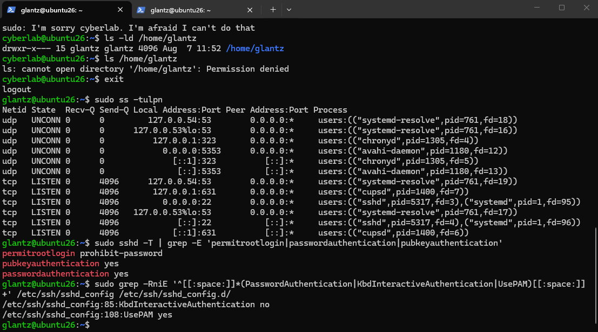

Cybersecurity Project
Home Cybersecurity Lab
Built and secured an Ubuntu Linux virtual machine in VMware to practice Linux administration, network security, access control, authentication, and security monitoring.
Overview
Project Goals
The goal of this project was to build a small Linux security lab that could be used to practice system administration and defensive security skills in a controlled environment.
I configured the Ubuntu virtual machine, secured remote access, implemented firewall and authentication controls, tested network exposure from Windows, monitored security events, and created a Bash script to audit the system's security configuration.
Lab Environment
Ubuntu Virtual Machine
I created an Ubuntu Linux virtual machine using VMware as the foundation for the lab. The virtual machine provided an isolated environment where I could configure services, change security settings, and test defensive controls without affecting my main Windows system.

Technologies Used
- VMware
- Ubuntu 26.04 LTS
- Windows PowerShell
- OpenSSH
- UFW Firewall
- Fail2Ban
- Nmap
- Linux users, groups, ACLs, and permissions
- Bash scripting
Network Security
Firewall and Network Validation
I configured UFW with a default-deny policy for incoming traffic while allowing outbound traffic. SSH on TCP port 22 was explicitly permitted so the Ubuntu system could still be administered remotely.
I tested connectivity between the Windows host and Ubuntu virtual machine to verify that the system remained reachable while the security controls were active.

Network testing from the Windows host allowed me to validate the Ubuntu system from the perspective of another machine rather than relying only on configuration information from the server itself.
Authentication
SSH Hardening
I installed and configured OpenSSH Server so the Ubuntu virtual machine could be administered remotely from Windows PowerShell.
I generated an ED25519 SSH key pair on Windows and configured the Ubuntu system to accept the public key. After verifying that key-based authentication worked, I disabled SSH password authentication.

I tested the hardened configuration by attempting to force a password-only SSH connection. The server rejected the attempt with a public-key authentication error, confirming that password authentication was disabled.
Threat Mitigation
Fail2Ban Protection
I installed Fail2Ban to provide additional protection for the SSH service. The SSH jail monitors authentication activity and can temporarily block systems that generate repeated failed login attempts.

I tested the protection by banning the Windows host IP address. New SSH connections from Windows timed out while the ban was active.

After the configured ban period expired, SSH access was restored. Fail2Ban recorded one total ban, demonstrating that the security control had been triggered successfully.
Access Control
Linux Users, Groups, and Permissions
I created a second Linux account named
cyberlab to practice managing permissions between
users.
The account was intentionally limited and could not use sudo. I also tested whether the account could access protected files belonging to another user.

The unauthorized file-access attempt returned
Permission denied, demonstrating that the Linux
permissions were preventing access as intended.
I then created a shared securityteam group and added
both users to it. Group ownership, ACLs, and the setgid permission
were used to create a controlled shared workspace.

Monitoring
Security Logs and Auditing
I reviewed Ubuntu journal logs to examine SSH activity and verify successful public-key authentication. I also inspected Fail2Ban logs to verify the ban and automatic unban events generated during testing.
As a final step, I created a Bash security-audit script to collect important security information from the system in a single report.
The script reports:
- Network configuration
- UFW firewall status
- SSH security settings
- Fail2Ban status
- User and group memberships
- Listening network ports
Skills Demonstrated
What I Practiced
- Linux system administration
- Virtual machine configuration
- Firewall configuration
- Network reconnaissance and validation
- SSH key-based authentication
- Linux system hardening
- Least privilege and access control
- Linux users and groups
- File permissions and ACLs
- Security monitoring and log analysis
- Fail2Ban configuration and testing
- Bash scripting